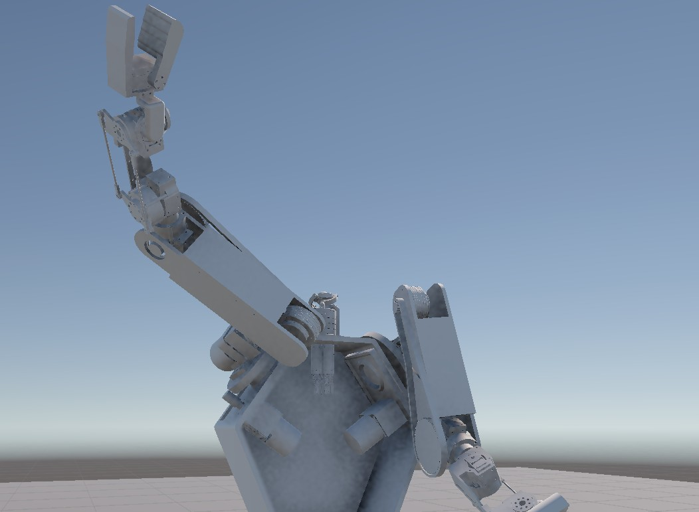
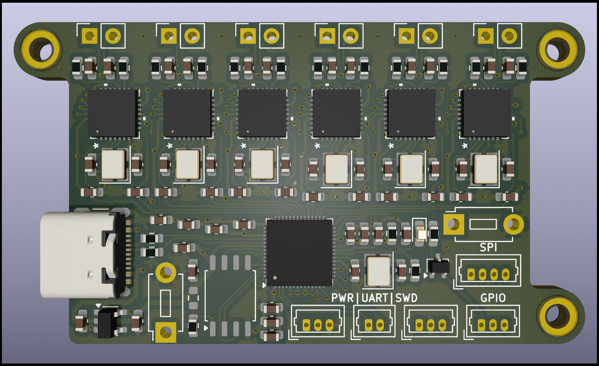

← All Projects
UMass Robotics — SAM Humanoid Torso
Humanoid · ElectricalServed as Electrical Lead and Project Manager on SAM, a humanoid torso built by UMass Robotics with the goal of demonstrating VR-based teleoperation control.
Designed and built a custom SPI-to-CAN interface board to bridge the high-level compute with the robot's motor and sensor network. Also designed the complete electrical stack — power distribution, communication topology, and actuator wiring.
The system enables an operator to control the humanoid's arms and torso in real time using a VR headset and controllers, with joint states mapped directly to the robot's degrees of freedom.
